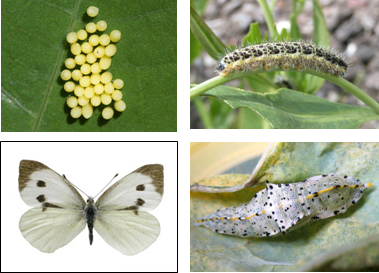

| Home |
| CRUCIFEROUS VEGETABLES |
MAJOR PESTS |
| 1. Diamond back moth |
| 2. Leaf webber |
| 3. Cabbage semilooper |
| 4. Cabbage butterfly |
| 5. Cabbage borer |
| 6. Mustard sawfly |
| 7. Cabbage aphid |
| 8. Cabbage flea beetle |
| Questions |
| Download Notes |
CRUCIFEROUS VEGETABLES :: MAJOR :: CABBAGE BUTTERFLY
4. Cabbage butterfly: Pieris brassicae (Pieridae: Lepidoptera)
Distribution and status: Throughout India
Host range: cabbage, cauliflower, knol-khol and it may also attack turnip, radish, sarson, toria (Brassica campestris) and other cruciferous plants
Bionomics
|  |
Full-grown pale yellow larva becomes greenish and measures 40-50 mm in length. In adults, the wings are pale white, with a black patch on the apical angle of each fore wing and a black spot on the costal margin of each hind wing. The females have two conspicuous black circular dots on the dorsal side of each fore wing. Males are smaller than the females and have black spots on the underside of each fore wing.
The butterflies are very active in the field and lay, on an average, 164 yellowish conical eggs in clusters of 50-90 on the upper or the lower side of a leaf. Egg period is 3-17 days. The caterpillars feed gregariously during the early instars and disperse as they approach maturity. They pass through five stages and are full-fed in 15-40 days. The larvae pupate at some distance from the food plants, often in barns or on trees. The pupal stage lasts 7-28 days. The butterflies live for 3-12 days and the pest breeds four times during October-April.
Damage symptoms
The caterpillars alone feed on leaves, young shoots and green pods. When young, they feed gregariously but the grown-up caterpillars migrate from one field to another. The first instar caterpillars just scrape the leaf surface, whereas the subsequent instars eat up leaves from the margins inwards, leaving intact the main veins. Often, entire plants are eaten up.
Management
- When in the gregarious stage, the caterpillars can be easily controlled by picking and destroying the infested leaves.
- The grown-up caterpillars should be controlled with malathion 5 per cent @ 37.5 kg per ha or by spraying 1.25 L of endosulfan 35 EC or 500 ml of dichlorvos 76 SC in 600-900 L of water per ha.
- Conserve larval parasitoid Apanteles glomeratus (Braconidae) in the natural populations.